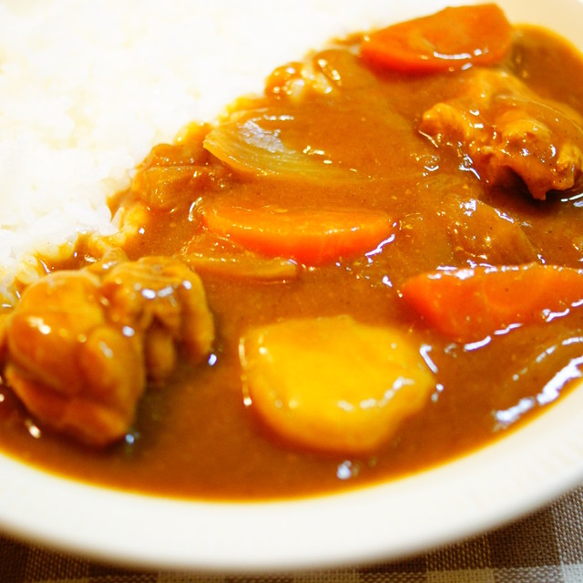

Japanese Curry

Description
Japanese curry is a popular homemade dish in Japan, often less spicy, thicker, and sweeter than other curries.
There are many variations to the curry. This curry uses chicken thighs but Katsu, pork mince, beef and simply vegetable curry are other variations.
Ingredients
- two carrots
- two potatoes
- two onions
- 1/2 kilo chicken thighs
- 1 box Japanese curry sauce mix
- 1000ml of water
- 2 tbsp oil
Steps
- Preheat the oil in pot and cook the chicken thighs, as well as sauteing the onions until lightly browned.
- Add the potatoes, carrots and onions into the pot over medium heat.
- Add water and simmer over low to medium heat.
- Add the curry sauce mix into the pot and stir until dissolved.
- Simmer over low heat until the curry thickens,stirring every ten minutes.
- Serve over rice.